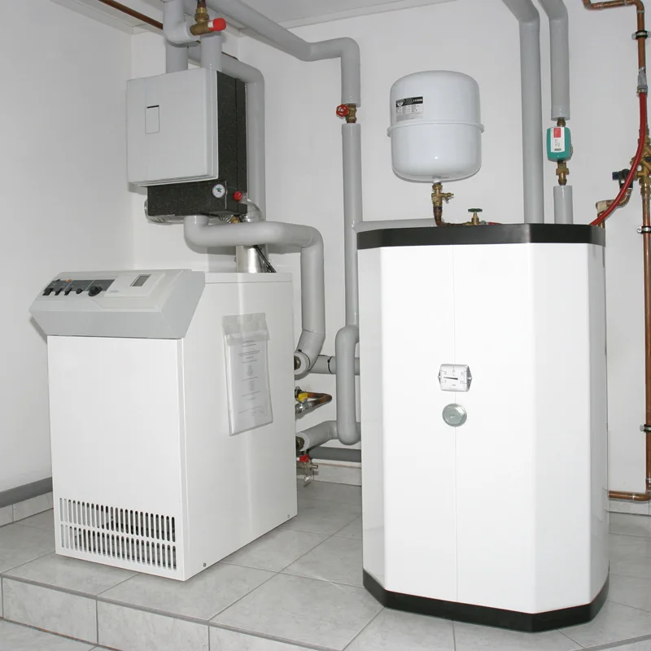
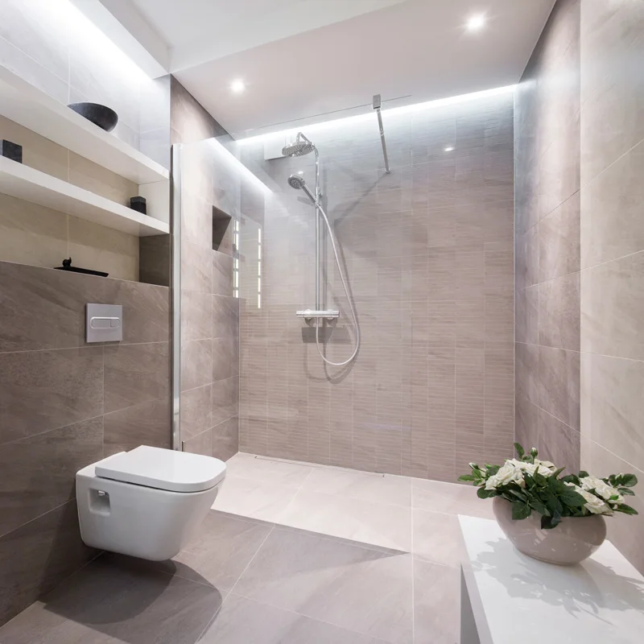

01 / WÄRME
Heizung & Wärmepumpe
Passende Heiztechnik für Neubau und Bestand. Dazu Reparatur, Wartung und Modernisierung.
Heizung besprechenHEIZUNG & SANITÄR · BAD OEYNHAUSEN
Ob Heizungsproblem, tropfende Leitung oder neue Pläne: Erzählen Sie uns, was ansteht. Wir klären den nächsten Schritt.
01 / HEIZUNG
Ein Foto vom Display oder Typenschild hilft uns bei der ersten Einschätzung.
WhatsApp öffnet mit Ihrer Nachricht. Absenden erst dort.
Ihr Ort bleibt bis zum Öffnen von WhatsApp im Browser.
DIE TECHNIK IM HINTERGRUND. DAS LEBEN MITTENDRIN.
GUTE TECHNIK. GUTES HANDWERK.
Von der tropfenden Armatur bis zur neuen Heizung: Wir beraten, installieren, reparieren und warten Ihre Haustechnik.

Passende Heiztechnik für Neubau und Bestand. Dazu Reparatur, Wartung und Modernisierung.
Heizung besprechen
Ein Bad, das zu Ihrem Alltag passt. Von der Rohrinstallation bis zur kompletten Badsanierung.
Badprojekt besprechenFrische Luft und angenehme Temperaturen. Individuell geplant für Ihre Räume.
Beratung anfragenSonnenwärme für Warmwasser und Heizung nutzen. Wir prüfen, was zu Ihrem Haus passt.
Möglichkeiten besprechenAuch nach dem Einbau für Sie da: Wartung und Service für Ihre Gebäudetechnik.
GEBÄUDETECHNIK TISSEN
Eine neue Heizung oder ein neues Bad entscheiden Sie nicht jeden Tag. Deshalb hören wir zuerst zu – und planen dann die Lösung, die zu Ihrem Zuhause passt.
Lernen wir uns kennenBeratung, Planung, Installation und Service aus einer Hand.
Gebäude, Wünsche und Budget geben die Richtung vor.
Ein Fachbetrieb vor Ort, den Sie direkt erreichen können.
Gute Arbeit, schnell und unkompliziert.
Vielen Dank und gerne wieder.
WENIG AUFWAND. EIN KLARER NÄCHSTER SCHRITT.
Anrufen oder per WhatsApp schreiben. Ein Foto und Ihr Ort helfen uns, Ihr Anliegen einzuordnen.
Wir besprechen, was Sie brauchen, und stimmen die nächsten Schritte und einen möglichen Termin ab.
Nach Abstimmung kümmern wir uns um die Arbeiten. Auch für spätere Wartung bleiben wir Ihr Kontakt.
HANDWERK VON HIER
Gebäudetechnik Tissen ist in Bad Oeynhausen im Kreis Minden-Lübbecke zuhause. Sie suchen Unterstützung für Heizung, Sanitär, Bad oder Raumklima? Sprechen Sie uns an.
Ihr Projekt liegt in der Umgebung? Nennen Sie uns Ihren Ort – wir klären direkt, ob wir Ihren Auftrag übernehmen können.
Eidingsen 30aRufen Sie uns unter 0170 2389177 an. Unsere veröffentlichten Öffnungszeiten sind Montag bis Freitag, 08:00 bis 16:30 Uhr. Alternativ können Sie uns per WhatsApp Ihr Anliegen, den Standort und ein Foto der Fehlermeldung schicken. Einen Termin stimmen wir persönlich ab.
Ja. Ein Foto der Anlage, des Typenschilds oder der sichtbaren Fehlermeldung hilft bei der ersten Einschätzung. Ergänzen Sie bitte Ihren Ort und eine kurze Beschreibung. Wir können auf diesem Weg die nächsten Schritte klären; eine Diagnose vor Ort kann dadurch nicht immer ersetzt werden.
Ja. Zu unseren Leistungen gehören Wartung, Service und Reparaturen an Heizungs- und Sanitäranlagen. Schreiben Sie uns, welche Anlage betroffen ist und was Ihnen aufgefallen ist.
Das klären wir individuell anhand Ihres Gebäudes, der vorhandenen Heizung und Ihres Wärmebedarfs. Nennen Sie uns zum Einstieg Baujahr, Heizungsart und Ihre Wünsche. Anschließend besprechen wir die passende Beratung.
Das hängt vom Bestand, dem gewünschten Umfang und der Ausstattung ab. Nach einer ersten Abstimmung können wir klären, welche Informationen oder ein Vor-Ort-Termin für ein konkretes Angebot nötig sind.
LASSEN SIE UNS DARÜBER SPRECHEN.
Ein Problem, eine Idee oder schon konkrete Pläne?
Wir freuen uns auf Ihre Nachricht.
Mo–Fr · 08:00–16:30 Uhr
info@gebaeudetechnik-tissen.de ↗